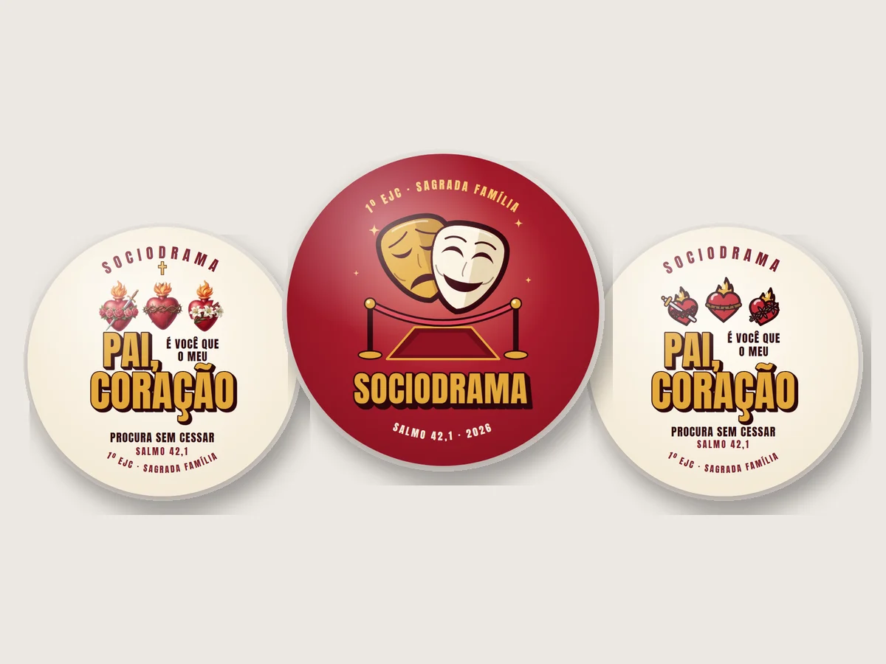

Nobre Barbearia
Site para barbearia clássica: serviços, horários, localização e um botão de agendamento sempre à vista. Visual escuro e dourado, com um poste de barbeiro em destaque.
React · JavaScript · CSS
Oi, eu sou o Ismael. Crio sites, landing pages e design digital para pequenos negócios que ainda dependem só do Instagram. Front-end, design e IA, do rascunho ao site no ar.
Do primeiro rascunho ao protótipo funcionando. Cada projeto resolve um problema real de um tipo de negócio.
Site para barbearia clássica: serviços, horários, localização e um botão de agendamento sempre à vista. Visual escuro e dourado, com um poste de barbeiro em destaque.
React · JavaScript · CSS

Site para restaurante italiano com cardápio digital e pedido direto pelo WhatsApp. Pensado primeiro para o celular, onde o cliente decide onde vai comer.
React · JavaScript · CSS

Tela de login com efeito de vidro e formas animadas ao fundo, botão de mostrar senha, opção “lembrar de mim” e layout que se adapta ao celular.
HTML · CSS · JavaScript

Artes dos bottons do 1º EJC Sagrada Família: o tema “Pai, é você que o meu coração procura sem cessar” e o Sociodrama, prontas para impressão.
Design gráfico · Ilustração · Arte para impressão

Arte autoral da camisa da Pastoral dos Coroinhas da Paróquia Jesus Cristo Rei, com São Tarcísio como padroeiro. Estilo tradicional, voltado para os jovens.
Design de estampa · Identidade visual
Seu negócio já tem Instagram. Agora falta o lugar onde o cliente encontra tudo e decide em segundos.
Uma página única e direta, feita para transformar visita em mensagem, pedido ou agendamento.
Um site completo, com serviços, cardápio ou catálogo, localização e contato, para ser encontrado no Google.
Identidade visual, posts, carrosséis e vídeos curtos para o seu negócio ter a mesma cara no site e nas redes.
Sem complicação: você acompanha cada etapa e aprova antes de ir para a próxima.

Sou o Ismael dos Santos, de João Pessoa (PB). Estou migrando de carreira para o desenvolvimento front-end e estudo Análise e Desenvolvimento de Sistemas na Estácio.
Junto código, design e inteligência artificial para entregar sites bonitos, rápidos e que funcionam de verdade para quem está do outro lado da tela: o seu cliente.
Me conta do seu negócio e eu te digo o que faz sentido: landing page, site completo ou só uma ajuda no visual. Sem compromisso.